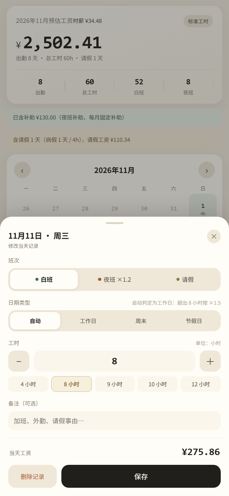
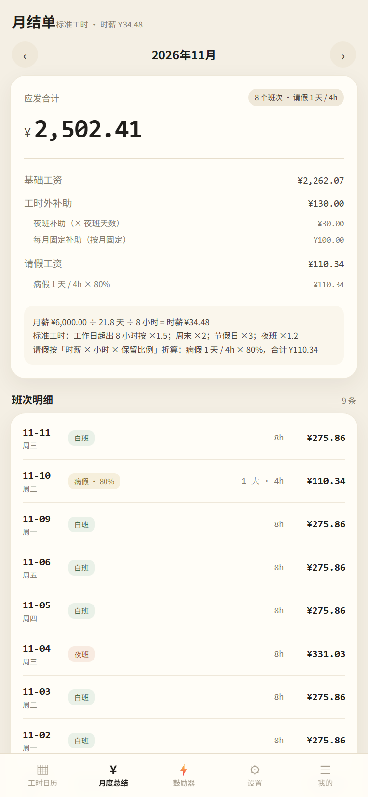
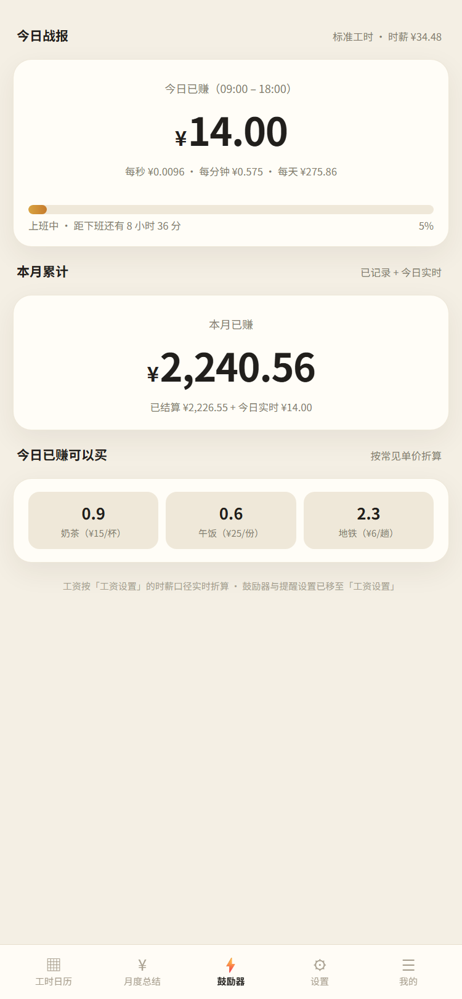
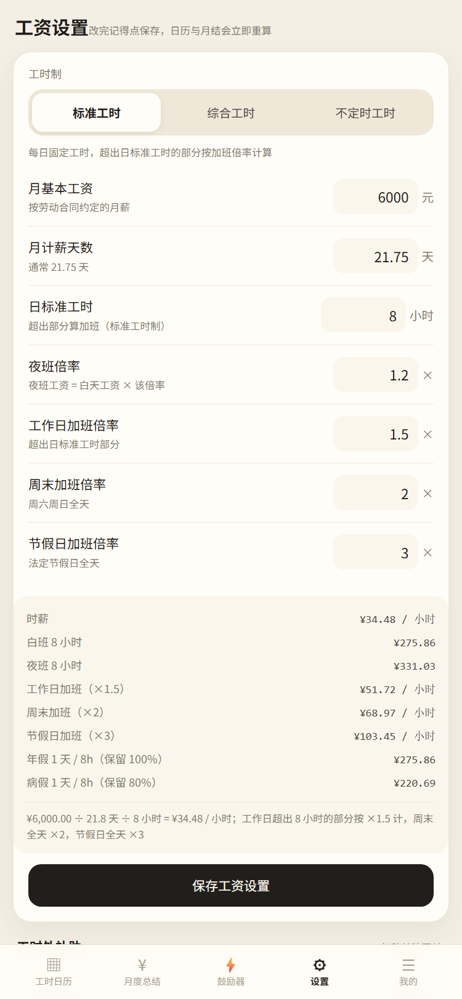
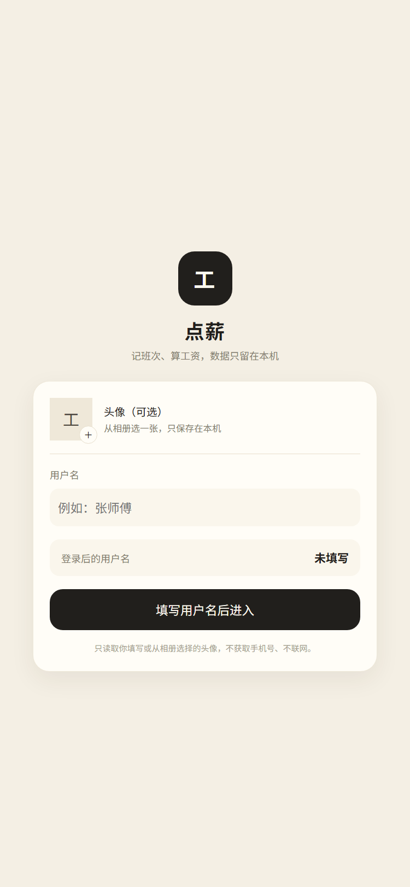

它能帮你做什么
围绕「记工 → 算薪 → 到手多少」这条主线，把每一分钱都算明白。
工时日历
点任意日期即可记白班 / 夜班 / 请假，格子上直接显示工时与状态。法定节假日自动标「休」，周末自动换色，本月预估工资始终置顶。
自动算薪
时薪 = 月薪 ÷ 21.75 ÷ 8，工作日超出按 1.5 倍、周末 2 倍、节假日 3 倍，夜班另有倍率。支持标准工时、综合工时、不定时三种制度。
月度总结
一张「月结单」拆解当月收入：基础工资、工时外补助、请假工资逐项列明，班次明细逐日核对，每一笔都有公式可查。
上班鼓励器
上班打卡后实时跳动：今天已赚多少、每秒涨多少、本月累计多少，还能换算成奶茶、午饭和地铁票，让摸鱼都有动力。
补助与请假
夜班补助、超时补助、车补、每月固定补助按自己的规则开关；九种请假假别单独设工资保留比例，病假 80%、事假 0% 都随你定。
每日鼓励通知
每天早晨在状态栏和锁屏推一条鼓励的话，元气满满地开始这一天；提醒时间与寄语都能在设置里改。
数据只留本机
全部数据存进手机私有目录的 SQLite 数据库，不联网、不上传、不收集任何信息；支持导出 SQL 备份，换手机不丢账。
自动检查更新
启动时自动检测新版本，发现新版会弹窗提示，点一下就能去下载最新安装包，不用经常回来翻网站。
功能截图详解
真实界面截图，每一张都能在 App 里找到。
① 工时日历 · 点一下就记完
日历按周排布，已记的日子直接显示工时：绿色代表白班、红色代表夜班、黄色代表请假。当月预估工资、出勤天数、总工时、白班夜班构成在顶部一目了然。
- 法定节假日自动带「休」角标，调休上班日标「班」
- 周六周日整格换色，一眼区分工作日与周末
- 周末加班、节假日值班按倍率单独计入

② 记工时 · 细节都在弹窗里
点开任意日期弹出记工面板：班次三选一，日期类型可自动判断也可手动指定（周末 / 节假日），常用工时一键选择，备注随手记。
- 「当天工资」实时预览，保存前就知道这天值多少钱
- 请假走同一名目：选假别、填小时，比例自动套用
- 已记录的日期再次点开即可修改或删除

③ 月度总结 · 一张透明的月结单
应发合计、基础工资、工时外补助、请假工资逐项拆开，夜班补助按夜班天数、固定补助按月计入；下方班次明细逐日列出金额，随时核对。
- 计算公式完整展示：月薪 ÷ 计薪天数 ÷ 日工时 = 时薪
- 支持按月回看，跨月加班调休不迷糊
- 综合工时制按周期累计，期末统一结算加班

④ 上班鼓励器 · 亲眼看工资到账
设定上下班时间后，页面中央实时跳动「今日已赚」：每秒涨多少、每分钟涨多少、今天满勤值多少。下方还有本月累计和「可以买什么」换算。
- 进度条显示距下班的剩余时间
- 今日实时部分与已结算部分分开统计，口径不混
- 工资按「工资设置」的时薪口径实时折算

⑤ 工资设置 · 算法你说了算
三种工时制随便切；月薪、计薪天数、日工时、夜班 / 加班 / 周末 / 节假日倍率逐项可调。底部即时刷新时薪速查表，改完立刻看到影响。
- 工时外补助：夜班 / 超时 / 车补 / 每月固定，各自开关
- 请假工资：九种假别逐一设置保留比例
- 不计算工资的时间段：自定义区间，鼓励器自动扣除

⑥ 登录与我的 · 一秒进入
首次使用只需填一个用户名（头像可选），之后自动登录直达日历页。不收手机号、不要验证码、不联网校验。
- 「我的」页可换头像、看使用统计、退出当前用户
- 支持多用户：不同的人在同一台手机上各自记录
- 数据导出为标准 SQL，备份迁移都方便
下载点薪
安装包体积不到 100 KB，下载安装即用。
点薪 · Android
安装时如提示「未知来源应用」，选择允许即可；本 App 不申请网络上传权限，数据只保存在手机里。
更新日志
- v2.8.0 · 2026-11-10
- 新增自动检查新版本；日历自动标注法定节假日「休」、周末换色；自定义不计时时间段；鼓励器算法修正。
- v2.5.1 · 2026-11-08
- 启动页全新设计；窄屏排版优化；数据迁移到 SQLite 本机数据库。
- v2.4.0 · 2026-11-07
- 新增上班鼓励器与每日鼓励通知；登录与头像功能；界面更名为「点薪」。
- v2.2.0 · 2026-11-05
- 工时日历、月度总结、工资设置、补助与请假完整上线。
常见问题
每天的工资是怎么算出来的？
时薪 = 月基本工资 ÷ 月计薪天数（21.75）÷ 日标准工时（8）。工作日超出日标准工时的部分按「工作日加班倍率」，周六周日全天按「周末加班倍率」，法定节假日全天按「节假日加班倍率」，夜班工资再乘夜班倍率。所有倍率都能在「工资设置」里改。
补助怎么计算？
在「工资设置 → 工时外补助」里按种类单独开启：夜班补助按夜班天数发放；超时补助在单日工时超过门槛（默认 8 小时）时按天发放；车补同理；每月固定补助在当月有出勤或请假时按月发放。
请假怎么记？工资怎么算？
记工时时把班次切成「请假」，选择假别并填写小时数（默认 8 小时，半天可填 4）。当天工资 = 时薪 × 小时 × 该假别的保留比例（年假 100%、病假 80%、事假 0% 等，比例可自行调整）。
我的数据安全吗？会传到网上吗？
所有数据都保存在手机应用私有目录的 SQLite 数据库中，不联网、不上传、不收集任何个人信息。卸载应用会丢数据，建议定期在「工资设置」里导出 SQL 备份。
换手机怎么迁移数据？
旧手机「工资设置 → 导出数据（SQL）」导出脚本文件，新手机上导入即可；账号只需重新填一次用户名。
发现新版本怎么更新？
App 每次启动会自动检查新版本，发现新版会弹窗提示，点「立即下载」就能获取最新安装包。也可以随时回到本页面手动下载。
问题反馈与建议
算错了工资？遇到显示问题？或者想要一个新功能？写下来告诉我们， 每一条反馈都会被认真对待。